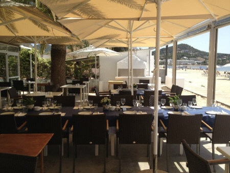

El mejor restaurante familiar, especializado en arroces y pescado fresco, de la isla de Ibiza.
Estamos ubicados en primera línea de la playa de Talamanca (a pocos minutos del centro de Ibiza).
Nuestra carta cuenta con una gran variedad de platos típicos de la cocina mediterránea (ensaladas, arroces, pescados frescos, carnes, pasta...) y una muy buena selección de vinos y sangrías. Merece la pena destacar algunos de nuestros productos estrella: ensalada de queso de cabra, calamares a la andaluza, paella de pescado y marisco, gallo al horno, tarta de queso, greixonera y sangría de cava con zumo natural de frutas. Además, también contamos con platos aptos para vegetarianos, veganos y celíacos.
Si lo que buscas es comida de calidad, un servicio eficiente y profesional y un ambiente tranquilo y familiar, acércate a disfrutar a nuestro restaurante.
¡Te esperamos!
A continuación os informamos de los ingredientes y el precio de nuestros diferentes arroces:
| Arroz | Ingredientes | Precio por persona (€) |
|---|---|---|
| Arroz a banda | Arroz, caldo de pescado, picada, sofrito, sepia y gamba pelada | 16 |
| Arroz con verduras | Arroz, agua, sofrito, alcachofa, zanahoria, berenjena y judías | 17 |
| Arroz a la marinera (caldoso) | Arroz, caldo de pescado, picada, sofrito, sepia, gamba, langostino, mejillón y pata de cangrejo | 22 |
| Arroz con Bogavante | Arroz, caldo de pescado, picada, sofrito, sepia y bogavante | 28 |
| Arroz negro | Arroz, caldo de pescado, picada, sofrito, tinta de calamar, sepia y gamba pelada | 16 |
| Paella mixta | Arroz, caldo de pescado, picada, sofrito, sepia, gamba, mejillón, pata de cangrejo y pollo | 17 |
| Paella de marisco | Arroz, caldo de pescado, picada, sofrito, sepia, gamba, langostino, mejillón y pata de cangrejo | 19 |
| Paella de pescado y marisco | Arroz, caldo de pescado, picada, sofrito, sepia, gamba, langostino, mejillón, pata de cangrejo y mero | 22 |
Puedes encontrar más información sobre nosotros en los siguientes links: